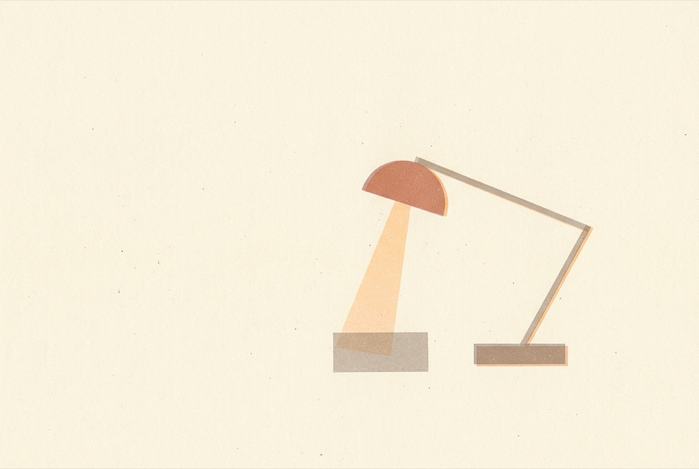
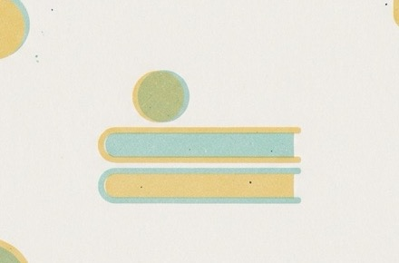
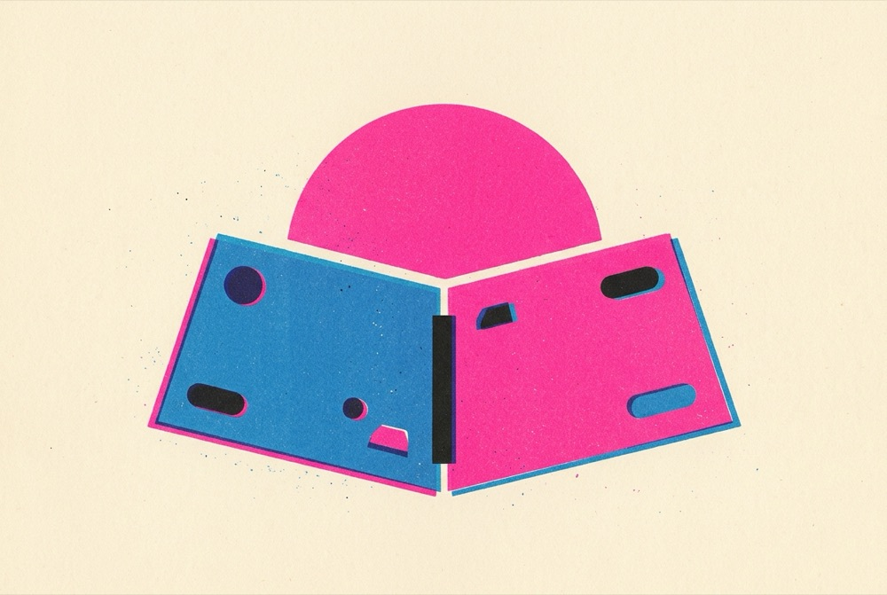
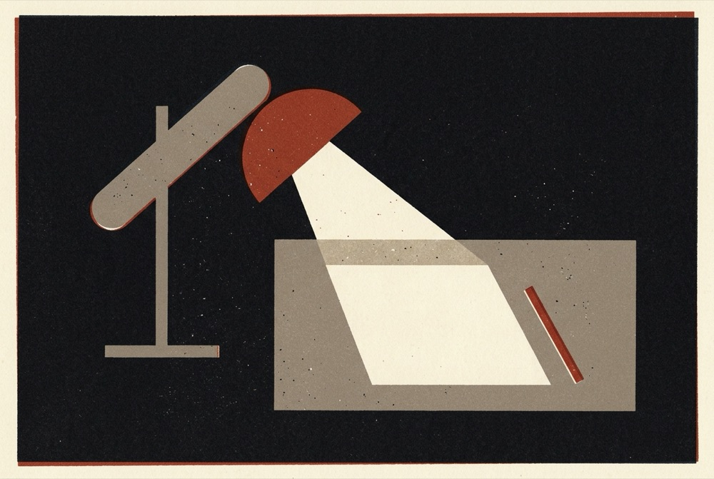
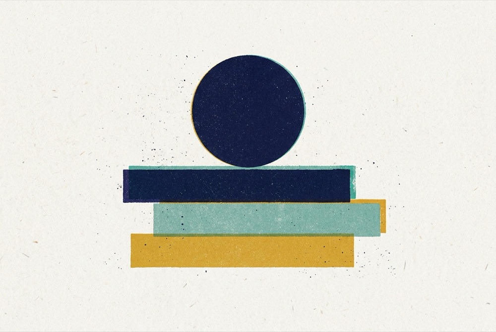

把博客印成一份 Risograph 出版物
三个方案共用同一套印刷语言：平涂几何形状、3–4 种专色、纸纹颗粒、轻微套色偏移。区别在纸色、阅读气质，以及插图怎么覆盖 64 篇文章。插图都由 LaoZhang（gemini-3.1-flash-image）按你的 riso 风格生成，模型里的文字和文章列表都是博客的真实内容。
第三轮 · B′ 平铺
每篇文章一张配图，系统字体
晨间台灯 · 平铺
首页的文章列表改成三列平铺，每篇文章配一张极简 riso 小图，图里画的东西取自文章内容。图的纸色就是页面底色，所以每张图看起来像直接印在页面上，没有卡片边框。字体全部用系统字体。
- 高考随想
- 窗户里吹出一条窗帘，对应“自由的风”
- 让 AI 戴着镣铐跳舞
- 立起的胶囊被一串小圆链拴在一块重物上
- GLM × Claude Code
- 插头正要插进插座
- 浏览器插件指南
- 浏览器窗口，右上角嵌着一块小方块
- 高估了智力
- 跷跷板：大而淡的圆被小而实的圆压起
- 2024 年终
- 层叠的浪，中间漂着一颗浮标
Randy Lu
Product Engineer，写作者。记录关于生活、技术与阅读的思考。
 高考随想
高考随想 让 AI 戴着镣铐跳舞
让 AI 戴着镣铐跳舞 在 Claude Code 中使用 GLM 4.6 的体验
在 Claude Code 中使用 GLM 4.6 的体验 现代浏览器插件开发指南
现代浏览器插件开发指南 我们高估了智力的重要性
我们高估了智力的重要性 2024: 在夜海中观望浪潮
2024: 在夜海中观望浪潮第二轮 · 轻量版
基于 B 和 C
晨间台灯
B 的配色翻到奶油纸上：不再用整片深底，台灯缩成一盏淡淡的小灯，放在标题旁边。油墨只剩锈红和暖灰两种，灯光橙只用作最新文章前的小圆点和文章里的链接下划线。
- 比 B 轻在哪
- 深底改为纸色；插图墨量不到画面 15%，不再撑满整张；文章页去掉光晕，只留一根锈红短线
- 字体
- 思源宋体做标题和正文，IBM Plex Mono 做日期
- 暗色模式
- 就用第一轮的 B：夜里自动“关灯”变深底，白天是这版
Randy Lu
记录关于生活、技术与阅读的思考。

- 高考随想
- 让 AI 戴着镣铐跳舞
- 在 Claude Code 中使用 GLM 4.6 的体验
- 现代浏览器插件开发指南
- 2024: 在夜海中观望浪潮
在 Claude Code 中使用 GLM 4.6 的体验
最近把 Claude Code 接到了 GLM 4.6 上，用了两周，记录一下真实的感受。
先说结论：日常的小改动够用，大的重构还是会换回去。
包豪斯便签
C 的程序化封面缩成列表前的一枚小印章，颜色调淡，每枚只有一到两个形状。首页从“书架网格”变回一条安静的文章列表，主图也缩小成一小块。藏青只用来写字，不再做色块。
- 比 C 轻在哪
- 大封面变成 34px 小印章；年份色条变成短线；标题字重从 700 降到 500；油墨饱和度降低
- 字体
- Jost 500 做标题，正文中文用系统黑体
- 暗色模式
- 藏青做底，米白写字，两种淡色印章不用改
Randy Lu

我如何使用 Apple Notes 做笔记
用过 Notion、Obsidian、Logseq 之后，我最后回到了 Apple Notes。
PARA 是骨架
文件夹只有四个：Projects、Areas、Resources、Archives。
第一轮
原始三个方向，留作对照
油墨小报
把博客当成一份自己印的 zine。奶油色纸，蓝和荧光粉两种油墨叠印，标题字故意套不准。最热闹、最有“手作出版物”感，也最接近 riso 最常见的样子。正好呼应你写过的《我的地下出版物》。
- 字体
- Archivo Black 做刊头和年份章，正文中文用系统黑体，文章标题用思源宋体
- 高亮色
- 荧光粉：套色阴影、最新一篇文章的荧光笔划线、hover
- 插图
- 首页一张刊头大图；文章页不配图，靠排版和色块撑
- 暗色模式
- 较难：荧光粉在深底上会刺眼，建议只做浅色
- 风险
- 长文阅读时，叠印效果需要克制，只用在标题和装饰上

- 高考随想
- 让 AI 戴着镣铐跳舞
- 在 Claude Code 中使用 GLM 4.6 的体验
- 现代浏览器插件开发指南
- 我们高估了智力的重要性
AI 和写作
我从来不让 AI 帮我写文章。不是因为它写得不好，而是因为写作对我来说本身就是思考的过程。
写下来的东西，才是真正想清楚的东西。
如果把这个过程外包出去，我得到的只是一篇文章，失去的却是那次思考。
深夜台灯
深色纸上的三色版画，和 RanDJ 是同一家族：近黑、奶油、暗锈红、暖灰。安静、夜读感强。整个站只在“正在读的那一篇”上点亮一盏橙色台灯，就像 RanDJ 里只有 ON AIR 亮起时才出现亮橙。
- 字体
- 思源宋体做标题和正文，IBM Plex Mono 做日期和标签
- 高亮色
- 灯光橙：只出现在最新文章、文章页顶部的光晕、首字
- 插图
- 首页一张台灯主图；可再做“灯灭 / 灯亮”两态，进入文章时交叉淡入
- 暗色模式
- 本身就是深色；浅色模式可把纸翻成奶油底、油墨变近黑
- 风险
- 深底长文阅读对部分读者偏累，正文字号和行高要放宽

Randy Lu
- 高考随想
- 让 AI 戴着镣铐跳舞
- 在 Claude Code 中使用 GLM 4.6 的体验
- 现代浏览器插件开发指南
- 2024: 在夜海中观望浪潮
在 Claude Code 中使用 GLM 4.6 的体验
最近把 ANTHROPIC_BASE_URL 指向了 GLM，用了两周，记录一下真实的感受。
先说结论：日常的小改动够用，大的重构还是会换回去。
包豪斯书架
浅色、克制、系统化。米白纸，芥末黄、褪色青、深藏青三色。重点是每篇文章都有一张“封面”：用文章 slug 算出形状和颜色，代码直接画出带套色偏移和颗粒的 riso 小图，64 篇不用一张张生成，也永远风格统一。首页像一面书架。
- 字体
- Jost（类 Futura 的几何无衬线）做标题，正文中文用系统黑体
- 高亮色
- 不另设亮色；靠藏青大面积色块做重点，最安静
- 插图
- 首页一张主图（AI 生成）；每篇文章封面由 slug 程序化生成，重要文章可再用 AI 图替换
- 暗色模式
- 容易：藏青做底，米白做油墨，芥末和青色不变
- 风险
- 程序化封面需要调一轮规则，避免形状组合太重复
Randy
Lu

我如何使用 Apple Notes 做笔记
用过 Notion、Obsidian、Logseq 之后，我最后回到了 Apple Notes。
PARA 是骨架
文件夹只有四个：Projects、Areas、Resources、Archives。
落到 Astro 里的做法
纸纹颗粒
一个 feTurbulence 的 SVG data URI，用 body::after 全屏覆盖，mix-blend-mode: multiply，不占请求。
套色偏移
标题用第二种油墨做 1–3px 的 text-shadow；色块用 box-shadow。叠印处用 multiply 自然变暗。
插图融进纸面
主图底色等于页面纸色，边缘用 mask-image 渐隐，看不到图片边框。约 1000px JPEG，颗粒压缩后保留得很好。
改动范围
主要是 global.css 的色板与 .prose-blog、index.astro 的布局；方案 C 额外加一个封面组件。
当前方向：B′ 平铺
见页面顶部。剩下的文章按同样的方法逐篇读内容、生成配图；以后写新文章时，也用同样的提示词和参考图补一张。